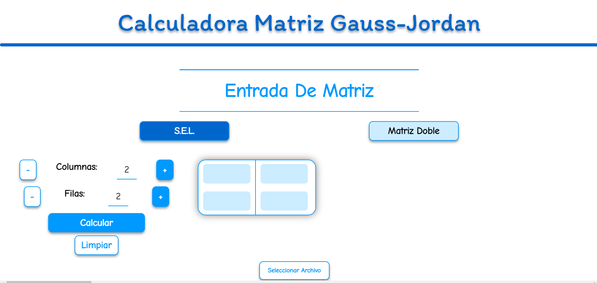
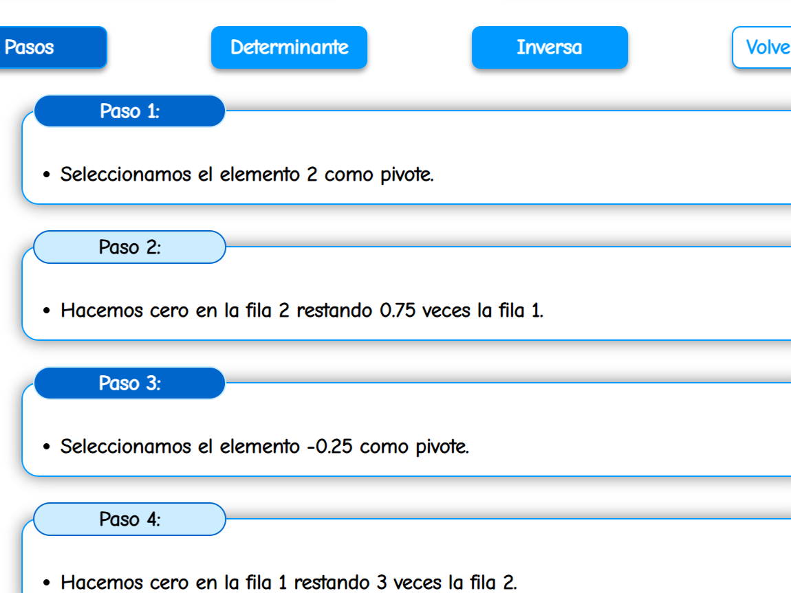
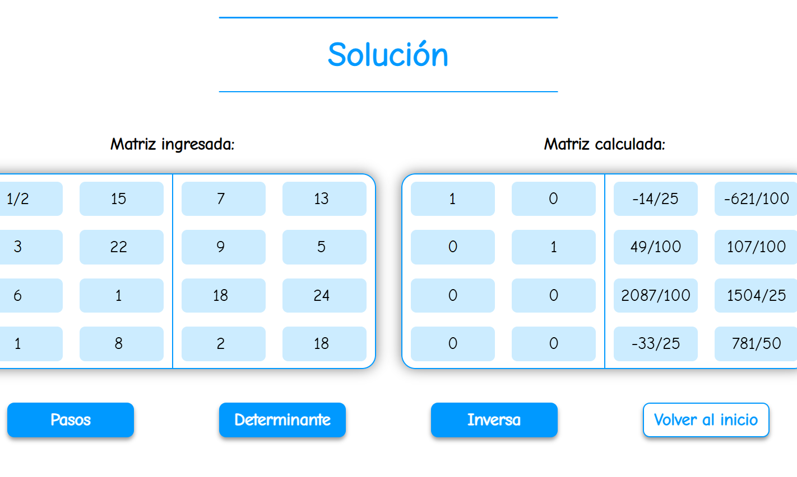
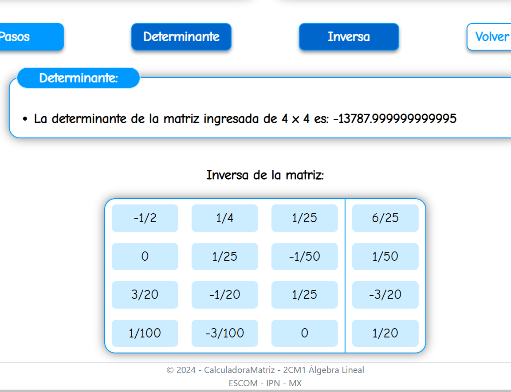

Operaciones básicas
Permite realizar operaciones entre matrices introducidas directamente por el usuario.
PROYECTO 02 · APLICACIÓN WEB
Aplicación desarrollada con C# y ASP.NET Core MVC para facilitar la resolución de operaciones con matrices, permitiendo introducir datos, procesarlos y visualizar los resultados desde una interfaz web.
Resultado obtenido
EL PROYECTO
01
El proyecto surgió con la intención de crear una herramienta que permitiera realizar diferentes operaciones con matrices desde una interfaz web sencilla y visual.
02
La aplicación recibe los valores introducidos por el usuario, procesa las operaciones desde el backend en C# y devuelve los resultados dentro de la misma plataforma.
FUNCIONALIDADES
La herramienta permite resolver distintas operaciones y trabajar con matrices de manera estructurada.
Permite realizar operaciones entre matrices introducidas directamente por el usuario.
El usuario puede trabajar con diferentes matrices y modificar sus valores desde la interfaz.
Las operaciones son procesadas mediante lógica desarrollada en C# dentro del backend.
Algunas funciones permiten mostrar el desarrollo de los cálculos para facilitar su comprensión.
Todas las operaciones se realizan desde una interfaz gráfica construida sobre ASP.NET Core MVC.
Los cálculos matriciales se encuentran implementados directamente mediante código C#.
GALERÍA
Algunas de las principales vistas y funciones disponibles dentro de la aplicación.

Vista inicial de la aplicación desde donde el usuario puede introducir las matrices y seleccionar las operaciones que desea realizar.

La aplicación muestra en texto los pasos utilizados durante el proceso de resolución, permitiendo seguir cómo se obtiene el resultado.

Presentación del resultado final después de procesar la operación, mostrando la matriz resultante de forma clara y organizada.

La herramienta permite calcular propiedades de una matriz, como su determinante, y obtener su matriz inversa cuando la operación es posible.
DEMOSTRACIÓN
Estos videos muestran el funcionamiento de la aplicación y algunas de las operaciones disponibles.
Recorrido por la interfaz y demostración de las principales herramientas disponibles.
Ejemplo de una de las funciones que muestra el proceso utilizado para obtener el resultado.
DESARROLLO
La aplicación fue desarrollada utilizando ASP.NET Core MVC, separando la interfaz, la lógica de procesamiento y el manejo de los datos introducidos por el usuario.
C# se utiliza para realizar las operaciones matriciales y procesar la información antes de enviar los resultados nuevamente a las vistas.
EXPERIENCIA
Este proyecto me permitió combinar conceptos matemáticos con desarrollo web, trasladando procedimientos matriciales a algoritmos implementados en C# y presentando los resultados mediante una interfaz accesible para el usuario.
ESTADO DEL PROYECTO
Actualmente el proyecto se presenta mediante una demostración grabada de su funcionamiento. La aplicación se encuentra en proceso de futuras mejoras antes de ser publicada como demostración interactiva.
¿Quieres conocer otros proyectos?
Volver a proyectos